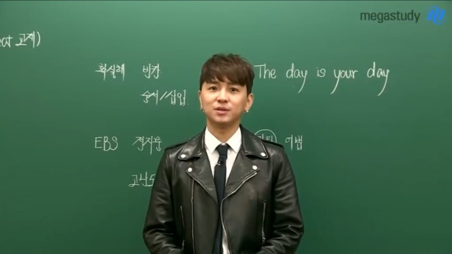
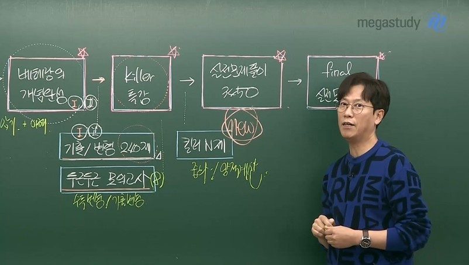
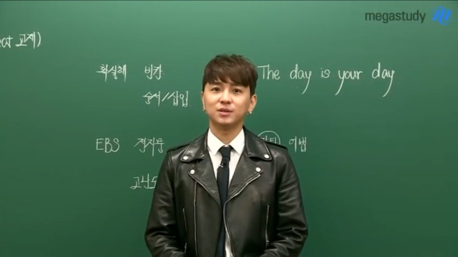
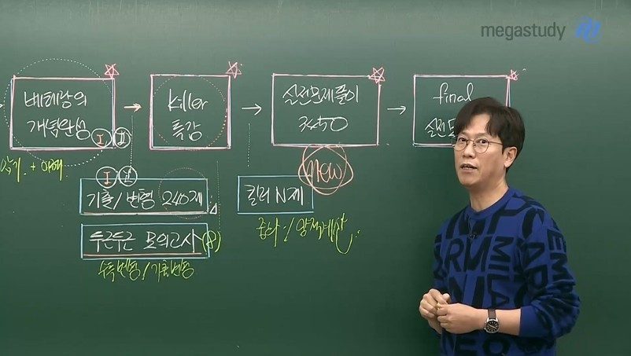
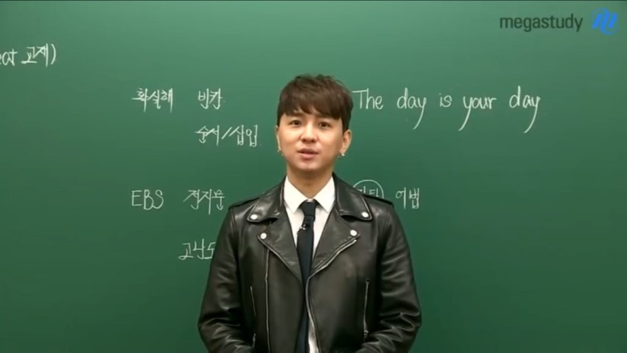
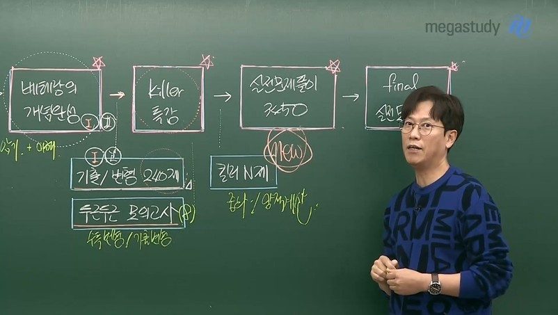

인강 뭐봐야돼?
수학
영어
국어
과학
인강 뭐봐야돼?
라는 사이트는 지금 고등학생에게 제일 필요한 것이 무엇인가? 라고 생각해봤더니 지금시기에는 공부가 제일 중요하다고 생각했습니다.
그래서 저는 공부할 때 필요한 인터넷 강의의 대한 사이트를 만들면 좋겠다고 생각했습니다.
그래서 인강 뭐봐야돼? 사이트는 과목별 인강에 맞게 좋은 인강사이트와 그에 맞는 좋은 선생님을 추천해드리는 사이트 입니다.
 
  
 